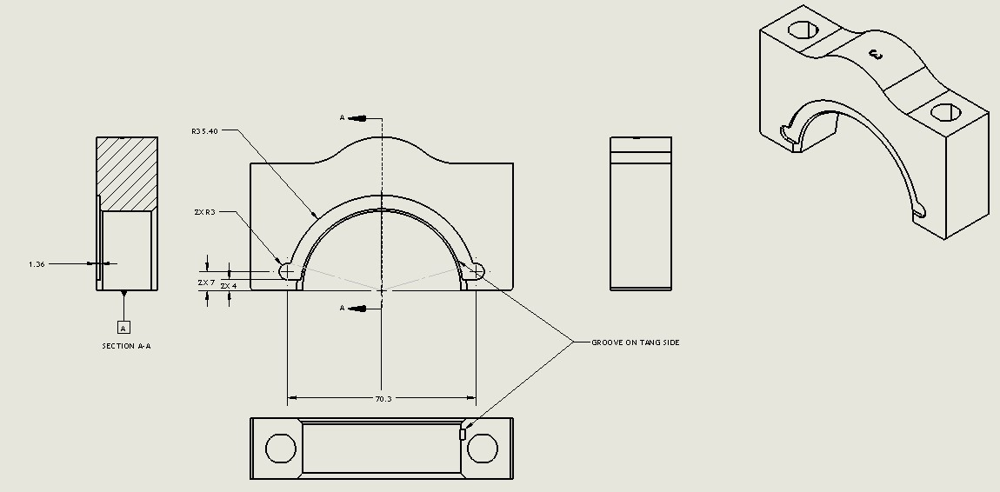

Audi S3 8P
Machine the center main cap on the EA113 2.0 TFSI so an extra thrust washer shares the load when the clutch is pressed.
The EA113 2.0 TFSI (06F block) controls crankshaft end play with a single pair of thrust washers. They sit in the center (3rd) main bearing, one on each side of the block half. The main cap itself carries no thrust washers. The earlier 058-block 1.8T used four washers, two in the block and two in the cap, so the full 360° around the crank journal took thrust load. On the EA113, every time the clutch pedal is pressed, the release force pushes the crankshaft toward the timing-belt end of the engine. That load goes through just one of the two washers and over time, in some configurations, can lead to failures.
As a preventative solution you may consider machining the center main cap so it takes an extra thrust washer and shares the load.

Note: This modification needs the engine to come apart. It's most worth doing during a bottom-end rebuild or when building a tuned manual car with an uprated clutch. On DSG cars (DQ250 wet clutch), there is no pedal-driven thrust load, so the benefit is smaller.
The 3rd main cap is removed and machined.
Once the cap is machined, the stock thrust washer must be modified to fit the recess in the main cap.